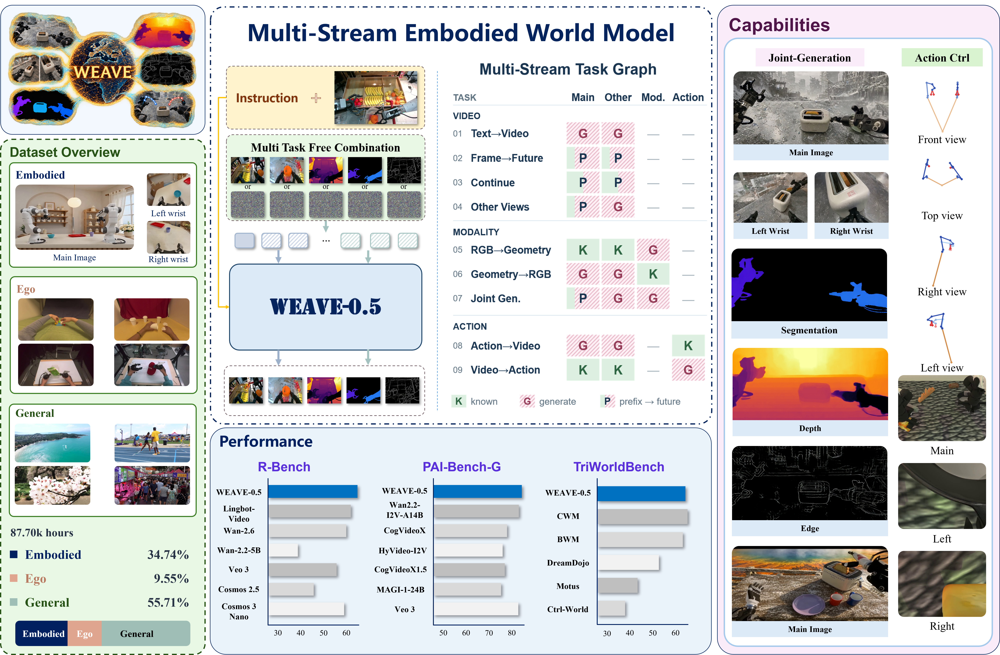
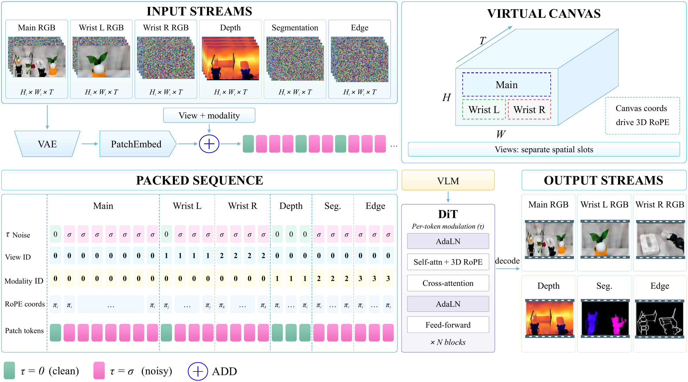

WEAVE-0.5: Weaving Multi-stream Observations into Embodied World Models
Beijing Innovation Center of Humanoid Robotics (X-Humanoid)
WFM System Group
Overview

How it works
One shared model, configurable visual streams.
WEAVE-0.5 represents each viewpoint and visual modality as an independently encoded stream at its native resolution. Stream tokens are packed into a shared sequence, allowing language and visual observations to condition generation through one video diffusion backbone.

Independent streams
RGB, depth, edges, and segmentation share a visual encoder while retaining their own viewpoints and resolutions.
A shared virtual canvas
Spatial offsets separate views. Aligned modalities share an origin with resolution-dependent strides, retaining the pretrained 3D RoPE structure.
Flexible prediction roles
Framewise timesteps distinguish observations from targets. Changing these roles expresses future prediction, view completion, modality prediction, and modality-conditioned generation.
Capability coverage
A flexible visual interface.
Reported visual capabilities of selected embodied world models, reproduced from the paper. This comparison describes capability coverage, not benchmark performance.
| Visual capability | Cosmos 3 | LingBot-Video | Ctrl-World | DreamX-Phi | RoboTransfer | WEAVE-0.5 |
|---|---|---|---|---|---|---|
| Single-view generation | ✓ | ✓ | ✓ | ✓ | ✓ | ✓ |
| Multi-view generation | ✓ | × | ✓ | ○ | ✓ | ✓ |
| Variable view count | × | × | × | × | × | ✓ |
| Cross-view completion | × | × | × | × | × | ✓ |
| Modality prediction RGB → modality | × | × | × | ○ | × | ✓ |
| Modality-conditioned generation Modality → RGB | ✓ | × | × | × | ✓ | ✓ |
| Joint RGB + modality generation | × | × | × | ○ | × | ✓ |
✓ Reported support○ Restricted support× Not described or demonstrated in the cited work
Modalities refer to depth, edges, or segmentation; support for one does not imply support for all three. DreamX-Phi uses an auxiliary depth-prediction branch rather than interchangeable RGB/depth conditioning roles. The comparison is not exhaustive, and an unreported capability does not establish an architectural limitation. As discussed in the paper, MVISTA-4D also supports variable view counts and masked view completion, while OmniView jointly represents observations and targets across views and time.
Sources: Cosmos 3, LingBot-Video, Ctrl-World, DreamX-Phi, and RoboTransfer.
Explore the results
Four ways to weave a scene.
Selected examples of multi-view video
and visual modality generation.
01 Video results
Joint generation
RGB views with depth, edges, and segmentation across the same scene.
Multi-view RGB + visual modalitiesSelect a scene, then press Play all.
02 Video results
Cross-view completion
Generate complementary wrist views conditioned on the observed main-view video.
Main view → complementary viewsSelect a scene, then press Play all.
03 Video results
Modality-conditioned generation
Generate RGB videos conditioned on a depth, edge, or segmentation video.
Visual modality → RGBSelect a scene, then press Play all.
04 Video results
Visual modality prediction
Predict depth, edges, or segmentation conditioned on observed RGB videos.
RGB → visual modalitySelect a scene, then press Play all.
Research resources
Continue exploring.
Research code, the technical report, and model releases will be linked here when available.